Guía práctica previa. Descubre cómo se hablan los equipos de una red, con Python
| Unidad | Unidad 3. Diseño LAN |
| Temas | Práctica previa a la teoría, versión con Python |
Esta guía se hace antes de que se explique la teoría de la unidad. No hay nada que estudiar de antemano. En cada estación primero escribes qué crees que va a pasar, después ejecutas algo real en tu computador, anotas lo que viste y lo comparas con tu predicción. Al terminar cada estación queda una pregunta sin responder, y esa pregunta la contesta la clase. Cuando llegues a la explicación, los nombres y las reglas van a tener algo concreto a lo que agarrarse, porque ya los viste funcionar.
Se trabaja en parejas, cada estudiante en su propio equipo, y se usa Python para varias de las herramientas. Todo se completa aunque tu pareja falte o la red de la sala bloquee cosas, porque cada estación tiene dos partes.
1 Antes de empezar
Las dos partes de cada estación
La Parte 1 se hace en tu equipo, tú solo. Cuando un programa de tu computador necesita hablar con otro programa del mismo computador, usa la dirección 127.0.0.1, que según el RFC 1122 es la dirección que cada equipo reserva para hablar consigo mismo. Esa parte no depende del firewall, ni de la red de la sala, ni de tu pareja, así que siempre se puede completar.
La Parte 2 se hace con tu pareja, con la dirección del equipo de tu compañero. Es la verificación cruzada y puede no funcionar por razones que no dependen de ti. El firewall de un equipo, la forma en que está armada la red de la sala o una dirección mal copiada bastan para que no pase nada. Cuando no funciona no te detienes. Anotas lo que viste, incluido el mensaje exacto si hubo uno, lees la lista de posibles causas que aparece en esa estación y sigues con la siguiente. Un resultado que no funcionó también es un dato, y la clase lo va a usar.
Si no tienes pareja ese día, la Parte 1 basta.
Qué necesitas
- Un computador con Windows 10 u 11, conectado por cable a la red de la sala.
- Python 3 instalado. Más abajo se explica cómo comprobarlo.
- Un navegador (Edge o Chrome).
- Una hoja de papel y un lápiz, para las estaciones 3, 4 y 7.
- Un lugar donde copiar las tablas de registro y la Hoja de pareja, que pueden ser el cuaderno o un documento.
- Tu pareja, con su propio computador. Uno es el estudiante A y el otro el estudiante B, y en cada estación cambian de rol.
No necesitas permisos de administrador. Ningún comando de esta guía cambia la configuración de tu equipo.
Dos reglas de seguridad
La primera. Usa solo los comandos que aparecen en esta guía. Hay opciones de los mismos comandos que sí cambian tu equipo. Según la documentación de Microsoft, ipconfig /release y ipconfig /renew sueltan y renuevan la configuración de red que recibió tu computador, y route add, route delete y route change modifican la tabla de caminos. Aquí solo se usa route print, que únicamente muestra.
La segunda. Un programa que se queda esperando solo se deja abierto mientras dura la estación y se cierra con Ctrl+C. El programa que muestra archivos solo muestra la carpeta sitio que tú preparas, nunca tus documentos. Si Windows muestra un aviso del firewall, sigue las instrucciones del apartado “Qué hace el firewall” antes de pulsar nada.
Cómo abrir la consola
Todos los comandos de esta guía se escriben en PowerShell, porque uno de ellos (Test-NetConnection) solo existe ahí. Según la documentación de Microsoft, PowerShell se abre desde el menú Inicio.
- Pulsa la tecla Windows del teclado.
- Escribe
PowerShell. - En la lista elige Windows PowerShell. No elijas “Windows PowerShell ISE” ni la versión “(x86)”.
- Pulsa Enter. Se abre una ventana azul con una línea que termina en el símbolo
>. Esa línea se llama prompt y empieza conPSy la carpeta actual, por ejemploPS C:\Users\estudiante>.
Para escribir un comando haces clic dentro de la ventana, escribes el texto tal cual aparece en la guía y pulsas Enter. Si copias el comando del bloque de la guía y lo pegas, en PowerShell basta con hacer clic derecho dentro de la ventana. El resultado que imprime un comando se llama salida.
Cómo comprobar que tienes Python
En la consola escribe el siguiente comando y pulsa Enter.
python --versionLa palabra
pythones el programa que abre el intérprete de Python, y--versiones una opción que pide solo su versión. Debe aparecer una línea como la de la imagen. Debe aparecer Python 3.8 o más. Si aparece 3.7 o menos, avisa al docente.

Si en lugar de eso aparece que
pythonno se reconoce como comando, o se abre la tienda de Microsoft, prueba con este otro comando.py --versionSi
py --versionsí muestra una versión, usapyen lugar depythonen todos los comandos de la guía. La documentación de Python indica quepyes un lanzador que busca la versión instalada. Si ninguno de los dos funciona, avisa al docente, porque esta guía necesita Python y sin él no puedes hacer las estaciones.
Cómo crear tu carpeta de trabajo
Todos los archivos de la guía viven en una sola carpeta, para no regarlos por el computador.
- Escribe
cd ~y pulsa Enter. El comandocdsignifica cambiar de carpeta, y~es la abreviatura de tu carpeta personal. El prompt pasa a mostrarPS C:\Users\seguido de tu usuario. - Escribe
mkdir u3y pulsa Enter.mkdircrea una carpeta nueva yu3es su nombre. PowerShell imprime una pequeña tabla con la carpeta recién creada. - Escribe
cd u3y pulsa Enter. El prompt ahora termina en\u3>. Esa es tu carpeta de trabajo. - Para ver qué hay en una carpeta se escribe
dir. Por ahora está vacía y PowerShell no imprime nada.
Si más adelante abres una consola nueva, escribe cd ~\u3 para volver a esta carpeta antes de seguir.
Cómo guardar un archivo de Python con el Bloc de notas
Varias estaciones te piden crear un archivo con código. El procedimiento es siempre el mismo.
En la consola, dentro de la carpeta
u3, escribenotepady el nombre del archivo, por ejemplonotepad bits.py, y pulsa Enter.Si el Bloc de notas pregunta si quieres crear el archivo, responde que sí.
Copia el código del bloque de la guía, con el botón de copiar que aparece sobre cada bloque, y pégalo en el Bloc de notas. Respeta los espacios del comienzo de las líneas, porque en Python tienen significado.
Pulsa Ctrl+S para guardar y cierra el Bloc de notas.
De vuelta en la consola, escribe
diry comprueba que el archivo se llama exactamente como indica la guía. Si aparecebits.py.txt, el Bloc de notas le puso una extensión de más. Corrígelo con el siguiente comando, cambiando los nombres por los del archivo que tengas.Rename-Item bits.py.txt bits.pyPara ejecutar un archivo escribes
pythony su nombre, por ejemplopython bits.py. Para corregir un error, vuelve a abrirlo connotepady el mismo nombre.
Cómo detener un programa que se queda esperando
Algunos programas de esta guía no devuelven el prompt: se quedan esperando. Eso es lo normal mientras funcionan. Para detenerlos haz clic dentro de su ventana y pulsa Ctrl+C. El prompt vuelve a aparecer. Si no reacciona, pulsa Ctrl+C otra vez, y si sigue sin reaccionar cierra la ventana con la X, que es seguro.
Cómo abrir una segunda consola
Las estaciones 1 y 6 usan dos consolas a la vez. Repite los pasos de “Cómo abrir la consola” para abrir una ventana nueva, déjala al lado de la primera y escribe cd ~\u3 en ella. Cada ventana es independiente: lo que ejecutas en una no se ve en la otra.
Qué hace el firewall
El firewall de Windows es el guardia que decide qué conexiones pueden entrar a tu computador. Según la documentación de Microsoft, por defecto bloquea todo el tráfico entrante que nadie solicitó o que no coincide con una regla, y deja salir el tráfico saliente. Las reglas pueden depender del programa, de las direcciones y hasta del tipo de mensaje de prueba que se use. Windows también clasifica cada red como de dominio, privada o pública, y aplica reglas distintas según la clasificación. Una red que Windows no logra identificar se trata como pública.
En la Parte 1 de cada estación los programas atienden únicamente a tu propio equipo, así que no debería aparecer ningún aviso. Si aparece, cancela y anota el texto completo.
En la Parte 2 los programas atienden a todo el laboratorio. La primera vez que un programa nuevo lo hace, Windows puede mostrar una ventana de seguridad que menciona el firewall y el nombre del programa (Python). Si la ves, haz lo siguiente.
- Lee el texto de la ventana y anótalo en tu tabla de registro, porque es un dato del experimento.
- Marca solo la casilla de redes privadas. Nunca marques la de redes públicas.
- Pulsa el botón de permitir el acceso.
- Si Windows pide el usuario y la contraseña de un administrador, pulsa Cancelar. No intentes obtenerlos. Anota que pidió credenciales y sigue con la estación.
Cancelar o no tener permiso no es un fallo tuyo. Solo significa que en esa Parte 2 es posible que tu compañero no logre entrar a tu programa, y eso también se anota.
Hoja de pareja
Antes de la primera estación, cada uno de los dos saca de su propio equipo los datos de esta hoja y se los pasa al otro, por ejemplo leyéndolos en voz alta o escribiéndolos en el papel del compañero. Es lo único que necesita saber de ti tu pareja.
- En la consola escribe
ipconfigy pulsa Enter.ipconfiges un comando de Windows que muestra la configuración de red de tu equipo y no cambia nada. - Busca el bloque que empieza con “Adaptador de Ethernet”, que es el del cable. Si hay varios, usa el que tenga una línea “Puerta de enlace predeterminada” con números. Ignora los que dicen VMware, VirtualBox, vEthernet o WSL y los que dicen “medios desconectados”.
- Copia en la hoja los tres datos que muestra la imagen: la dirección IPv4, la máscara de subred y la puerta de enlace predeterminada. No hace falta entenderlos todavía.
- Escribe
ipconfig /ally pulsa Enter. La opción/allpide la configuración completa. Busca en el mismo bloque la línea “Dirección física” y copia su valor, que son seis pares de letras y números separados por guiones.

| Dato | Estudiante A | Estudiante B |
|---|---|---|
| Dirección IPv4 | ||
| Máscara de subred | ||
| Puerta de enlace predeterminada | ||
| Dirección física |
Sin pareja, usa 192.168.10.45 como dirección del compañero en la estación 2. Las demás Partes 2 se saltan.
Mapa de la práctica
Cada estación usa una herramienta distinta y cada una deja una pregunta para la clase.
Tus tablas de registro
Cada estación trae su propia tabla de registro. Cópiala donde prefieras y llénala a medida que avanzas. Las columnas son siempre las mismas.
- Mi predicción. Lo que escribes antes de ejecutar nada.
- Parte 1 (mi equipo). Lo que viste en tu propio computador.
- Parte 2 (con mi pareja). Lo que viste con la dirección de tu compañero, o la palabra “no funcionó” con el mensaje exacto y las causas que crees posibles.
- Qué me llamó la atención. Lo que te sorprendió o no esperabas.
Palabras de la práctica
Estas palabras se usan sin más explicación. Las demás se explican donde aparecen, o se explican en la clase.
| Palabra | En esta guía |
|---|---|
| Consola | La ventana azul de PowerShell donde escribes comandos. |
| Comando | El nombre de un programa que escribes para que el computador haga algo. |
| Opción | Una palabra que va después del comando y cambia lo que hace, como /all o --version. |
| Salida | El texto que imprime un comando después de ejecutarse. |
| Prompt | La línea de la consola donde escribes, que termina en >. |
| El número después de los dos puntos | En 127.0.0.1:8000, el 8000 acompaña a la dirección e indica a qué programa del equipo va dirigida la llamada. Algunos programas lo llaman puerto en sus mensajes; en clase se explica. |
| Aviso del firewall | La ventana de seguridad de Windows que puede aparecer cuando un programa quiere recibir llamadas. |
2 Estación 1. Un servidor propio en parejas
En esta estación conviertes tu computador en un lugar al que otros pueden entrar con el navegador, y descubres qué hace cada lado de la conversación. Python trae un programa llamado http.server que muestra por la red los archivos de una carpeta.
Predice
Antes de abrir nada, escribe en la columna “Mi predicción” de esta tabla qué crees que va a pasar en cada fila.
| Qué miro | Mi predicción | Parte 1 (mi equipo) | Parte 2 (con mi pareja) | Qué me llamó la atención |
|---|---|---|---|---|
| Qué ve el navegador mientras el programa está encendido | ||||
| Qué escribe la consola cada vez que el navegador entra | ||||
| Qué ve el navegador después de apagar el programa y recargar | ||||
| Qué dirección aparece en la consola cuando entra mi compañero | (no aplica) |
Haz. Parte 1, en tu equipo
Abre PowerShell como se explicó en “Cómo abrir la consola”.
Escribe
cd ~\u3y pulsa Enter. El prompt debe terminar en\u3>. Si dice que no encuentra la carpeta, vuelve a “Cómo crear tu carpeta de trabajo”.Escribe
mkdir sitioy pulsa Enter. Crea la carpeta que el programa va a mostrar. PowerShell imprime una tabla pequeña con una fila que dicesitio.Escribe
cd sitioy pulsa Enter. El prompt debe terminar en\u3\sitio>.Escribe el siguiente comando y pulsa Enter. No imprime nada si salió bien.
Set-Content saludo.txt "hola desde mi equipo"Escribe el siguiente comando y pulsa Enter. Tampoco imprime nada.
Set-Content lectura.txt "temperatura=24.5"Pieza Qué hace Set-ContentEscribe un texto dentro de un archivo, y lo crea si no existe. saludo.txtEl nombre del archivo que se crea en la carpeta actual. "hola desde mi equipo"El texto que se guarda, entre comillas. Escribe
diry pulsa Enter. Deben aparecer dos filas,lectura.txtcon longitud 18 ysaludo.txtcon longitud 22. Si falta alguna, repite el paso 5 o el 6.Escribe el siguiente comando y pulsa Enter. Es el programa que espera.
python -m http.server 8000 --bind 127.0.0.1Pieza Qué hace pythonAbre el intérprete de Python. -mLe pide que ejecute un módulo que ya trae, en lugar de un archivo tuyo. http.serverEl módulo que muestra por la red los archivos de la carpeta actual. 8000El número que acompaña a la dirección. El navegador tendrá que usar el mismo. --bind 127.0.0.1Hace que el programa atienda solo a tu propio equipo. Sin esta opción atendería a todo el laboratorio. Debe aparecer la primera línea de la imagen, la que empieza con
Serving HTTP on, y el prompt no vuelve. Eso es lo correcto: el programa está esperando. Si aparece una línea que empieza conOSErrory habla de “un uso de cada dirección”, otro programa de tu equipo ya ocupa ese número. Pulsa Ctrl+C si hace falta, cambia el 8000 por 8001 en este comando y en la dirección del paso 10, y usa 8001 en toda la estación.Abre el navegador, haz clic en la barra de direcciones, escribe
http://127.0.0.1:8000y pulsa Enter. Escribe127.0.0.1y nolocalhost, para que no se cuele otra forma de la dirección. Debe aparecer una página que dice “Directory listing for /” con los dos archivos como enlaces.

- Si el navegador dice que no pudo conectarse, vuelve a la consola y comprueba que el programa sigue esperando, y que escribiste la dirección exactamente como en el paso 10.
- Vuelve a la ventana de la consola, sin cerrar el navegador. El programa escribió una línea por cada cosa que el navegador pidió.

- Lee cada línea de registro de la imagen. La tabla que sigue explica cada parte.
| N | Parte de la línea | Qué es |
|---|---|---|
| 1 | Serving HTTP on 127.0.0.1 port 8000 |
El programa avisa que quedó esperando llamadas en esa dirección y con ese número. Aparece una sola vez, al arrancar. |
| 2 | 127.0.0.1 - - [fecha y hora] |
Quién llamó y cuándo. La documentación de Python indica que la dirección de quien llama y la fecha se escriben al comienzo de cada línea. |
| 2 | "GET / HTTP/1.1" |
Lo que el navegador pidió. GET significa “dame” y la barra / es la página de inicio de la carpeta. |
| 2 | 200 |
Un número que significa “todo bien, aquí está lo que pediste”. Según el RFC 9110 es el código de éxito. |
| 3 | GET /favicon.ico ... 404 |
Algunos navegadores piden por su cuenta el ícono de la pestaña; si no ves esta línea, no pasa nada. Esta carpeta no lo tiene y el programa contesta 404, que según el RFC 9110 significa que no encontró lo pedido. |
| 4 | GET /saludo.txt |
Aparece cuando haces clic en ese enlace en el paso siguiente. |
- En el navegador haz clic en
saludo.txt. Debe aparecer el texto “hola desde mi equipo” y, en la consola, una línea nueva conGET /saludo.txty200. - En el navegador escribe
http://127.0.0.1:8000/no-existe.txty pulsa Enter. Debe aparecer una página de error con el código 404, y la consola debe escribir una línea concode 404. - Anota en la columna “Parte 1” de la tabla lo que viste en las tres primeras filas.
- Para cerrar el programa, haz clic dentro de la consola y pulsa Ctrl+C. Debe aparecer
Keyboard interrupt received, exiting.y el prompt vuelve. - En el navegador pulsa F5 para recargar la página. Debe aparecer una página de error que dice que no se pudo conectar. Anota su texto en la fila tres.
- La consola dice que
pythonno se reconoce. Vuelve a “Cómo comprobar que tienes Python”. - El navegador no carga nada. Comprueba que la consola muestra
Serving HTTP ony que no la cerraste. - La página sale vacía, sin los dos archivos. Estás en otra carpeta. Detén el programa con Ctrl+C, escribe
cd ~\u3\sitioy arráncalo de nuevo.
Haz. Parte 2, con tu pareja
Esta parte necesita que el firewall de quien enciende el programa deje pasar la llamada. Puede fallar. Si falla, anota el resultado y sigue. Primero lo hace el estudiante A: A enciende y B entra.
Estudiante A. Si el programa de la Parte 1 sigue encendido, ciérralo con Ctrl+C. Asegúrate de que el prompt termina en
\u3\sitio>.Estudiante A. Escribe el siguiente comando y pulsa Enter. Es el mismo de antes, sin la opción
--bind, así que ahora atiende a todo el laboratorio.python -m http.server 8000Estudiante A. Si aparece el aviso del firewall, sigue los pasos de “Qué hace el firewall”: solo redes privadas, y si pide administrador, cancelar y anotar el mensaje.
Estudiante A. Debe aparecer la línea de arranque que muestra la imagen. En ella
::significa cualquier entrada de tu equipo. En clase se explica por qué.Estudiante A. Dile a B tu dirección IPv4, la de la Hoja de pareja.
Estudiante B. Abre el navegador y escribe
http://seguido de la dirección IPv4 de A, dos puntos y8000. Por ejemplohttp://192.168.10.20:8000. Pulsa Enter.Estudiante B. Si funciona, aparece “Directory listing for /” con los dos archivos de A, y B puede abrir
saludo.txt.
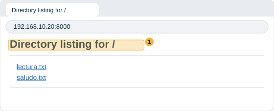
- Estudiante A. Mira tu consola. Debe aparecer una línea por cada cosa que B pidió. La dirección del comienzo no es la tuya: es la de B. A veces viene precedida de
::ffff:, que es una marca con la que Python escribe una dirección de cuatro números. Lo que importa son los cuatro números del final. El RFC 4291 describe ese formato.
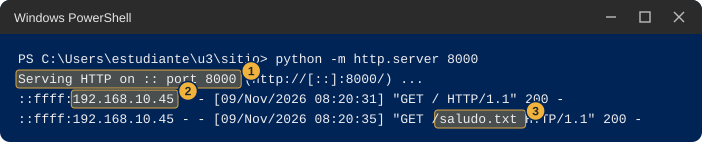
- Estudiante A. Anota en “Parte 2” la dirección que apareció en el registro.
- Estudiante A. Cierra el programa con Ctrl+C. Estudiante B: recarga la página y anota qué cambió.
- Cambien de rol y repitan: ahora B enciende y A entra.
No afirmes cuál es la causa. Anota el resultado, el mensaje exacto del navegador y marca en tu hoja cuáles de estas posibilidades crees que pudieron ser.
- El navegador dice que la página tardó demasiado en responder, o que no se pudo acceder al sitio. El firewall del equipo de A pudo haber bloqueado la llamada, ya sea porque se cancelaron los avisos o porque se permitió solo en un tipo de red que no es el de la sala.
- Windows pidió credenciales de administrador y cancelaste. Entonces es posible que el programa de A no pueda recibir llamadas de otros equipos.
- La dirección está mal copiada o falta el
:8000. Revísala letra por letra en la Hoja de pareja. - A dejó encendido el programa de la Parte 1, el que tiene
--bind 127.0.0.1. Ese solo atiende a su propio equipo. Ciérralo y arranca el de esta parte. - La red de la sala no deja pasar este tipo de tráfico entre equipos, o los dos equipos están en redes distintas. Esto se estudia en la estación 3.
- El navegador de B abrió
https://en lugar dehttp://. Escribe la dirección completa conhttp://.
Anota y observa
Llena las filas que faltan de la tabla y responde en una frase cada pregunta.
- ¿Cuál de las dos partes tuvo que estar encendida antes para que la otra funcionara?
- ¿Qué hizo la consola cada vez que el navegador pidió algo? ¿Y qué hizo mientras el navegador no pedía nada?
- ¿Qué número iba al lado de cada petición? ¿Cambió cuando pediste un archivo que no existe?
La consola con http.server estuvo todo el tiempo esperando y solo reaccionó cuando el navegador la llamó. El navegador fue quien tomó la iniciativa de pedir y recibió la respuesta. Por eso antes de abrir el navegador el programa tenía que estar encendido, y por eso después de apagarlo el navegador no encontró a nadie. Cada petición dejó una línea con el número 200 cuando todo fue bien y 404 cuando el archivo no existía.
Esta estación abre el tema de la arquitectura cliente-servidor: quién pide, quién responde, y qué cambia cuando hay un intermediario. La pregunta que queda es qué hace falta para que un equipo pueda atender a muchos otros a la vez.
3 Estación 2. Las direcciones como números
En esta estación miras por dentro la dirección de tu computador. Con unas pocas líneas de Python la conviertes en un número y en ceros y unos, y descubres qué parte de la dirección cambia cuando tú cambias un número.
Predice
Escribe en la tabla qué crees antes de ejecutar nada.
| Qué miro | Mi predicción | Parte 1 (mi equipo) | Parte 2 (con mi pareja) | Qué me llamó la atención |
|---|---|---|---|---|
| Mi dirección como un solo número: ¿pequeño o enorme? | (no aplica) | |||
| Cuántos de los 32 ceros y unos cambian al sumar 1 al último número | (no aplica) | |||
| Cuántos cambian al sumar 1 al tercer número | (no aplica) | |||
| Cuántos ceros y unos, contados desde la izquierda, comparten mi dirección y la de mi compañero | (no aplica) |
Haz. Parte 1, en tu equipo
En la consola, dentro de tu carpeta
u3, escribecd ~\u3y pulsa Enter.Escribe
notepad bits.pyy pulsa Enter. Sigue “Cómo guardar un archivo de Python con el Bloc de notas” y pega este código.import ipaddress def pedir(mensaje): while True: texto = input(mensaje).strip() if texto == "": return None try: return ipaddress.IPv4Address(texto) except ValueError: print("Eso no es una direccion de cuatro numeros. Prueba otra vez.") def en_bits(direccion): bits = format(int(direccion), "032b") return ".".join(bits[i:i + 8] for i in range(0, 32, 8)) mia = pedir("Tu direccion: ") if mia is not None: print("Como numero: ", int(mia)) print("En bits: ", en_bits(mia)) while True: otra = pedir("Otra direccion (Enter para terminar): ") if otra is None: break print("Como numero: ", int(otra)) print("En bits: ", en_bits(otra)) print("Cambian: ", "".join(" " if a == b else "^" for a, b in zip(en_bits(mia), en_bits(otra)))) print("Iguales desde la izquierda:", 32 - (int(mia) ^ int(otra)).bit_length())Lo que hace cada línea importante se explica en la tabla que sigue, en palabras comunes.
| Línea | Qué hace |
|---|---|
import ipaddress |
Trae un módulo que Python ya incluye para trabajar con direcciones. |
ipaddress.IPv4Address(texto) |
Convierte el texto que escribes en una dirección. Si no son cuatro números entre 0 y 255, falla, y el programa avisa y vuelve a preguntar. |
int(direccion) |
La dirección vista como un solo número entero. |
format(numero, "032b") |
Ese número escrito en ceros y unos. La b pide ceros y unos y el 032 pide 32 cifras, rellenando con ceros a la izquierda. |
".".join(bits[i:i + 8] ...) |
Parte las 32 cifras en grupos de 8 y pone un punto entre grupos, para que se lean mejor. |
La línea Cambian |
Compara las dos direcciones cifra por cifra y escribe ^ debajo de las que son distintas. |
La línea Iguales desde la izquierda |
Cuenta cuántas cifras seguidas, empezando por la izquierda, son iguales en las dos direcciones. |
- Guarda con Ctrl+S, cierra el Bloc de notas y comprueba con
dirque el archivo se llamabits.py. - Escribe
python bits.pyy pulsa Enter. El programa preguntaTu direccion:. - Escribe tu dirección IPv4 de la Hoja de pareja y pulsa Enter. Debe imprimir dos líneas,
Como numero:con un número entero largo yEn bits:con cuatro grupos de ocho cifras separados por puntos. Si en lugar de eso dice que no es una dirección de cuatro números, revisa que la escribiste sin espacios y con tres puntos. Anota cuántas cifras tiene el número. - En la pregunta
Otra direccionescribe tu misma dirección con el último número aumentado en 1. Si el último es 255, réstale 1. Aparecen las dos direcciones en bits y una líneaCambiancon uno o más signos^. Anota cuántos^hay y en qué grupo caen. - Escribe ahora tu dirección con el tercer número aumentado en 1. Si el tercero es 255, réstale 1. Anota en qué grupo caen los
^. - Escribe tu dirección con el último número en 0 y después en 255, y mira cómo se ve el último grupo en cada caso.
- Escribe una dirección con un número mayor que 255 en alguno de los cuatro lugares, como
192.168.10.256. Debe aparecer el aviso de que no es una dirección de cuatro números. Pregúntate por qué 255 es el límite. - Pulsa Enter sin escribir nada para terminar. El prompt vuelve.

- Python dice
SyntaxErroroIndentationError. Al pegar se perdieron los espacios del comienzo de línea. Vuelve a abrir el archivo connotepad bits.py, bórralo todo y pega de nuevo el bloque completo. - Dice
can't open fileoNo such file. No estás en la carpetau3, o el archivo se llamabits.py.txt. Escribecd ~\u3y revisa condir. - Se ven letras raras en lugar de los acentos del prompt. Es normal: el programa se escribió sin acentos a propósito.
Haz. Parte 2, con tu pareja
Esta parte no usa la red: solo necesitas la dirección de tu compañero, que ya tienes en la Hoja de pareja. Por eso no puede fallar por culpa del firewall.
- Escribe
python bits.pyy pulsa Enter. - En
Tu direccion:escribe tu dirección IPv4. EnOtra direccionescribe la de tu compañero. - Mira la línea
Iguales desde la izquierday anota su número. No cuentes los puntos. Compara el tuyo con el de tu compañero. - Si el número que contaste no coincide con el de tu pareja, revisen que los dos escribieron las direcciones sin errores.
- Pulsa Enter sin escribir nada para terminar.
Anota y observa
Completa la tabla. Después responde.
- ¿Qué tan grande es el número en que se convierte una dirección?
- Cuando cambiaste el último número, ¿los cambios cayeron en el mismo lugar que cuando cambiaste el tercero? ¿Por qué crees que fue así?
- ¿Qué tienen en común, cifra por cifra, tu dirección y la de tu compañero? ¿Dónde empiezan a diferir?
La dirección es un número de 32 cifras escrito en ceros y unos, y los cuatro números que ves son esa cadena partida en grupos de 8. Un cambio en el último número solo mueve cifras del último grupo, y un cambio en el tercero mueve cifras del tercer grupo, así que no todas las cifras pesan lo mismo al comparar dos direcciones. Dos equipos del mismo laboratorio suelen compartir las primeras cifras y diferir hacia el final. Cuántas comparten es justo lo que decide la clase de la estación 3.
Esta estación abre el tema de la dirección IPv4 en bits, la máscara y el prefijo. La pregunta que queda es cuántas de las 32 cifras sirven para saber si dos equipos están juntos.
4 Estación 3. ¿Quién es vecino de quién?
Dos equipos conectados a la misma red no siempre se hablan de manera directa. En esta estación deduces en papel una regla a partir de datos de un laboratorio de ejemplo, y después compruebas qué pasa entre tu equipo y el de tu compañero.
Predice
Estos son ocho pares de equipos de un laboratorio de ejemplo, dibujado para esta guía, con el resultado de intentar que se hablen directamente, es decir, que el mensaje llegue de uno al otro sin pasar por un equipo intermedio. No son los datos de tu sala.
| Par | Equipo 1 | Equipo 2 | ¿Se comunican directamente? |
|---|---|---|---|
| 1 | 192.168.10.20 | 192.168.10.45 | Sí |
| 2 | 192.168.10.20 | 192.168.10.62 | Sí |
| 3 | 192.168.10.62 | 192.168.10.65 | No |
| 4 | 192.168.10.70 | 192.168.10.71 | Sí |
| 5 | 192.168.10.65 | 192.168.10.94 | Sí |
| 6 | 192.168.10.94 | 192.168.10.97 | No |
| 7 | 192.168.10.97 | 192.168.10.110 | Sí |
| 8 | 192.168.10.110 | 192.168.10.113 | No |
En papel, antes de tocar el computador.
- Dibuja una línea recta y márcale desde 0 hasta 127, con una marca cada 16. Solo importa el último número de cada dirección, porque los tres primeros son iguales en todos los pares.
- Pon un punto en la línea por cada último número de la tabla (20, 45, 62, 65, 70, 71, 94, 97, 110 y 113) y une cada par con un trazo. Usa verde para los que sí se comunican y rojo para los que no.
- Dibuja con lápiz dónde crees que están los cortes que separan un grupo de otro.
- Escribe en una frase, con tus palabras, la regla que decide si dos equipos se comunican directamente.
- Responde: ¿te alcanzan estos datos para saber el lugar exacto de cada corte? ¿Qué par agregarías para saberlo?
Después, mira las dos direcciones de la Hoja de pareja y escribe tu predicción sobre tu compañero.
| Qué miro | Mi predicción | Parte 1 (mi equipo) | Parte 2 (con mi pareja) | Qué me llamó la atención |
|---|---|---|---|---|
| La regla que deduzco del papel, en una frase | (no aplica) | |||
| Respuesta del ping a 127.0.0.1 y a mi propia dirección | (no aplica) | |||
Cuántas filas “dinámico” tiene mi tabla de arp -a |
(no aplica) | |||
| Mi compañero y yo, ¿posibilidad 1 o posibilidad 2? | (no aplica) | |||
| Respuesta del ping a mi compañero | (no aplica) | |||
Dirección física del compañero en arp -a |
(no aplica) |
Haz. Parte 1, en tu equipo
Abre PowerShell y escribe
cd ~\u3. Pulsa Enter.Escribe el siguiente comando y pulsa Enter. Prueba si tu computador responde cuando le hablas a su propia dirección de siempre.
ping 127.0.0.1Pieza Qué hace pingEnvía unos mensajes de prueba a una dirección y espera que le contesten. Según la documentación de Microsoft envía mensajes de eco y muestra las respuestas con sus tiempos. 127.0.0.1La dirección con la que un equipo se habla a sí mismo. Debe aparecer algo como lo de la imagen: cuatro líneas que empiezan por
Respuesta desdey un resumen conrecibidos = 4. Eso significa que tu equipo contestó. Si en cambio aparece “Tiempo de espera agotado”, anótalo y sigue: en tu propio equipo no debería pasar.
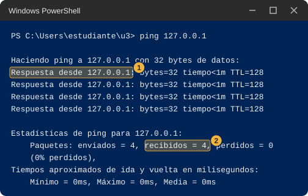
Escribe
pingseguido de un espacio y tu propia dirección IPv4 de la Hoja de pareja, por ejemploping 192.168.10.20, y pulsa Enter. También debe contestar tu propio equipo.Escribe el siguiente comando y pulsa Enter.
arp -aPieza Qué hace arpMuestra la libreta donde tu equipo apunta las direcciones físicas de los equipos con los que habló hace poco. -aPide que muestre todas las anotaciones. La salida está agrupada por bloques que empiezan con
Interfaz:y una dirección. Busca el bloque cuya dirección es tu IPv4 y cuenta cuántas filas dicendinámicoen la última columna. Puede ser un número pequeño, incluso cero. Anótalo.Anota en la columna “Parte 1” lo que viste en el ping y en el arp.
- El ping dice que
pingno se reconoce. Escribiste algo distinto: el comando espingy después una dirección, con un espacio entre los dos. - El ping a tu propia dirección da “Tiempo de espera agotado”. Anótalo con el mensaje exacto y sigue.
arp -aimprime pocas filas o ninguna del tipodinámico. Es normal: la libreta solo guarda equipos con los que hablaste hace poco.
Haz. Parte 2, con tu pareja
Aquí puede pasar cualquier cosa y está bien: lo que importa es lo que veas. Los dos hacen los pasos a la vez, cada uno desde su equipo.
- Escribe tu predicción de la tabla antes de ejecutar nada: ¿posibilidad 1 o posibilidad 2? ¿Contestará el ping?
- Escribe
pingseguido de la dirección IPv4 de tu compañero de la Hoja de pareja y pulsa Enter. Espera a que termine: puede tardar varios segundos. - Fíjate en cuál de estos resultados te da.
- Cuatro líneas
Respuesta desdeyrecibidos = 4, como en la imagen del paso 3 de la Parte 1: el otro equipo contestó. - Cuatro líneas
Tiempo de espera agotado para esta solicitud.yrecibidos = 0, como en la imagen siguiente. Según la documentación de Microsoft, ese mensaje sale cuando no llegó una respuesta dentro del tiempo de espera, que por defecto es de 4 segundos. - Otro mensaje. Copia el texto exacto.
- Cuatro líneas
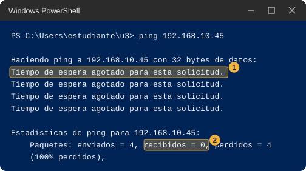
- Inmediatamente después, sin esperar, escribe
arp -ay pulsa Enter. - Busca el bloque
Interfaz:con tu dirección y revisa si hay una fila con la dirección IPv4 de tu compañero. Si la hay, copia su dirección física, que son seis pares con guiones y minúsculas, y compárala con la “Dirección física” que tu compañero anotó en la Hoja de pareja. Las letras pueden estar en mayúscula o minúscula.
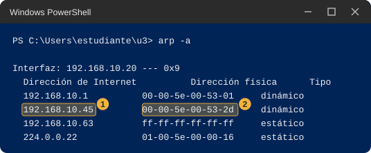
- Anota en la columna “Parte 2” los tres datos: resultado del ping, si apareció la fila de tu compañero, y si la dirección física coincide.
No afirmes cuál es la causa. Anota lo que viste y marca las posibilidades que consideres razonables.
- El ping da “Tiempo de espera agotado” pero tu compañero está encendido y conectado. Su firewall pudo haber descartado el mensaje de prueba aunque su equipo funcione bien. La documentación de Microsoft indica que las reglas del firewall pueden depender del tipo de mensaje de eco, así que un equipo puede estar configurado para no contestar al ping.
- El ping da “Tiempo de espera agotado” y en
arp -ano aparece tu compañero. Los dos equipos pueden estar en redes distintas, o la dirección está mal copiada. Revisa la Hoja de pareja. - En
arp -aaparece tu compañero con su dirección física, pero el ping no contestó. Esa combinación sugiere que tu equipo sí llegó a preguntar por él, y que lo que no contestó fue el mensaje de prueba. Es una pista, no una prueba. - En
arp -ano aparece ninguna fila nueva. Las anotaciones duran poco tiempo. Repite el ping y escribearp -aenseguida. - Les salen cosas distintas a los dos. Es posible: cada equipo tiene su propio firewall. Anoten los dos resultados.
Anota y observa
Completa la tabla. Después responde.
- ¿Tu predicción sobre tu compañero fue acertada? ¿En qué te basaste?
- ¿Coincide la regla que escribiste en papel con lo que viste entre tu equipo y el de tu compañero?
- Si el ping no contestó, ¿qué otro dato de la salida te dice que sí hay conexión entre ustedes?
Los equipos que se comunican directamente son los que caen dentro del mismo tramo de la recta. Los tramos de este laboratorio de ejemplo cortan en 64, 96 y 112: de 0 a 63, de 64 a 95, de 96 a 111 y de 112 en adelante. Con estos ocho pares no se puede saber el lugar exacto de cada corte, porque hay un hueco entre 62 y 65, entre 94 y 97 y entre 110 y 113. Para saberlo habría que agregar pares con números intermedios. La estación 4 muestra de dónde salen esos cortes.
Esta estación abre el tema de la dirección de red, la máscara de subred y la puerta de enlace, y de cómo ARP descubre la dirección física del vecino. La pregunta que queda es cómo decide tu equipo, antes de enviar un mensaje, si lo entrega directamente o se lo da a otro equipo.
5 Estación 4. Repartir 256 direcciones
Quien arma una red tiene que repartir las direcciones disponibles entre los grupos de equipos que la usan. En esta estación repartes un bloque de 256 direcciones, el que va de 192.168.10.0 a 192.168.10.255, entre cuatro grupos, primero en papel con partes iguales y después con una herramienta de Python.
Los grupos son los del laboratorio de ejemplo: los sensores necesitan 60 direcciones, el grupo de administración necesita 25, los servidores necesitan 10 y un cable que une dos equipos de red necesita 2. En total son 97 equipos.
Predice
En papel, para cada una de las tres formas de partir el bloque de la imagen, responde sin herramientas.
- A. Dos partes iguales de 128. ¿Alcanzan las partes para los cuatro grupos?
- B. Cuatro partes iguales de 64. ¿Cabe cada grupo en una parte? ¿Cuántas direcciones sobran en total, restando los 97 equipos de las 256? Después de usar la herramienta, recalcula este número con los equipos que de verdad caben.
- C. Ocho partes iguales de 32. ¿Cabe el grupo de los sensores en una sola parte?
- En un bloque de 64 direcciones, ¿cuántos equipos crees que caben?
| Qué miro | Mi predicción | Parte 1 (mi equipo) | Parte 2 (con mi pareja) | Qué me llamó la atención |
|---|---|---|---|---|
| A, dos partes de 128: ¿alcanza? | ||||
| B, cuatro partes de 64: ¿cabe? ¿cuántos lugares sobran? | ||||
| C, ocho partes de 32: ¿cabe el grupo de 60? | ||||
| Equipos que caben en un bloque de 64 direcciones | ||||
| Tamaños que elijo para los cuatro grupos y cuántas direcciones sobran en total |
Haz. Parte 1, en tu equipo
Abre PowerShell y escribe
cd ~\u3. Pulsa Enter.Escribe
notepad bloques.pyy pulsa Enter. Sigue “Cómo guardar un archivo de Python con el Bloc de notas” y pega este código.import ipaddress while True: texto = input("Numero tras la barra, de 24 a 30 (Enter para terminar): ").strip() if texto == "": break if not texto.isdigit() or not 24 <= int(texto) <= 30: print("Escribe un numero entero entre 24 y 30.") continue bloque = ipaddress.ip_network("192.168.10.0/" + texto) print(" direcciones del bloque:", bloque.num_addresses) print(" primera y ultima: ", bloque[0], "y", bloque[-1]) print(" equipos que caben: ", len(list(bloque.hosts())))Guarda con Ctrl+S, cierra el Bloc de notas y comprueba con
dirque el archivo se llamabloques.py.Línea Qué hace "192.168.10.0/" + textoEscribe el bloque que empieza en 192.168.10.0. El número que escribes después de la barra decide qué tan grande es.bloque.num_addressesCuántas direcciones tiene el bloque, contando todas. bloque[0]ybloque[-1]La primera y la última dirección del bloque. bloque.hosts()La lista de direcciones que la documentación de Python llama utilizables, que no incluye la primera ni la última. Escribe
python bloques.pyy pulsa Enter. El programa preguntaNumero tras la barra, de 24 a 30.Escribe
24y pulsa Enter. Deben aparecer tres líneas:direcciones del bloque: 256,primera y ultima:con192.168.10.0 y 192.168.10.255yequipos que caben: 254. Si escribes un número fuera de 24 a 30, el programa avisa y vuelve a preguntar.Repite con 25, 26, 27, 28, 29 y 30, uno por uno, y copia en esta tabla los dos números que cambian.
Número tras la barra Direcciones del bloque Equipos que caben 24 256 254 25 26 27 28 29 30 Mira tu tabla y responde: cada vez que el número de la barra sube en 1, ¿qué pasa con las direcciones del bloque? ¿Qué relación hay entre las direcciones y los equipos que caben?

Ahora elige, para cada grupo, el bloque más pequeño en el que caben todos sus equipos, y copia esta tabla en papel para llenarla con ayuda de la tuya.
Grupo Necesita Número tras la barra Direcciones del bloque Equipos que caben Lugares que sobran Sensores 60 Administración 25 Servidores 10 Enlace 2 Suma las direcciones de los cuatro bloques que elegiste y réstalas de 256. Suma los lugares que sobran de la última columna. Recalcula la forma B con los equipos que caben (62 por bloque) y compárala con tus bloques. Pulsa Enter sin escribir nada para cerrar el programa.
- Dice
can't open fileoNo such file. Estás en otra carpeta o el archivo se llamabloques.py.txt. Escribecd ~\u3y revisa condir. - Dice
IndentationError. Al pegar se perdieron los espacios del comienzo de línea. Vuelve a abrir el archivo y pega el bloque completo. - Los números no te cuadran con los de la imagen. La imagen usa los mismos números para 24, 26 y 30. Si los tuyos son distintos, revisa que el bloque empieza en
192.168.10.0.
Haz. Parte 2, con tu pareja
Esta parte no usa la red, solo la conversación, así que siempre se puede completar.
- Intercambien las tablas del paso 8 y comparen, fila por fila, los números que eligió cada uno.
- Si en alguna fila eligieron números distintos, cada uno escribe el número del otro en
bloques.pyy mira si el bloque alcanza. - Entre los dos escriban en una frase la regla que usaron para elegir el tamaño de cada bloque.
- Discutan si hay una sola forma de repartir los 256 y por qué.
Anota y observa
Completa la tabla de registro con tus números y los de tu pareja. Después responde.
- Con partes iguales, ¿sobra o falta? ¿Qué pasa con el grupo más grande y con el más pequeño?
- ¿Qué números de direcciones puede tener un bloque, según la tabla que llenaste?
- Con tamaños distintos, ¿cuántas direcciones quedan sin repartir?
Con dos partes iguales no alcanzan las partes para los cuatro grupos. Con cuatro partes de 64 cabe cada grupo, pero se pierden 151 lugares de equipo (248 caben contra 97 que se necesitan) y no queda nada libre. Con ocho partes de 32 el grupo de los sensores no cabe en una sola parte. Un bloque solo puede tener 256, 128, 64, 32, 16, 8 o 4 direcciones en la herramienta, y siempre caben dos equipos menos que direcciones tiene el bloque. Con tamaños distintos queda así: 64 direcciones para los sensores (caben 62), 32 para administración (caben 30), 16 para los servidores (caben 14) y 4 para el enlace (caben 2). Suman 116, así que quedan 140 direcciones sin repartir, y sobran 11 lugares de equipo dentro de los bloques elegidos.
Esta estación abre el tema de VLSM, CIDR y el prefijo, y del cálculo del desperdicio. Las preguntas que quedan son por qué siempre caben dos equipos menos que direcciones tiene el bloque y por qué los tamaños son potencias de 2.
6 Estación 5. Por dónde salgo
Cuando tu computador envía un mensaje a otro equipo, alguien tiene que decidir por dónde sale. En esta estación miras dos herramientas de Windows que muestran esa decisión: una lista las salidas que conoce tu equipo y la otra sigue el camino real de un mensaje.
Predice
Escribe en la tabla qué crees que va a pasar antes de ejecutar nada. Un salto es cada equipo intermedio por el que pasa el mensaje antes de llegar a su destino.
| Qué miro | Mi predicción | Parte 1 (mi equipo) | Parte 2 (con mi pareja) | Qué me llamó la atención |
|---|---|---|---|---|
| Cuántos saltos hay hasta 8.8.8.8 | (no aplica) | |||
| Cuántos saltos hay hasta mi compañero | (no aplica) | |||
La “Puerta de enlace” de la fila que empieza con 0.0.0.0, comparada con la de ipconfig |
(no aplica) | |||
La primera dirección de tracert hacia 8.8.8.8: ¿es igual en mi equipo y en el de mi compañero? |
Haz. Parte 1, en tu equipo
Abre PowerShell y escribe
cd ~\u3. Pulsa Enter.Escribe el siguiente comando y pulsa Enter.
route print -4Pieza Qué hace routeMuestra y administra la lista de salidas que conoce tu equipo. La documentación de Microsoft la llama tabla de enrutamiento. printLe pide que solo la muestre. Otras palabras, como addodelete, la modifican y no se usan en esta guía.-4Que muestre solo las direcciones de cuatro números. Esta opción la acepta el comando en Windows 11 aunque la página de Microsoft no la menciona. Debe aparecer algo como la imagen, que es una versión recortada. Hay una lista de interfaces arriba y, debajo de
Rutas activas:, una tabla de cinco columnas con encabezadosDestino de red,Máscara de red,Puerta de enlace,InterfazyMétrica. Tu tabla tendrá otros números y quizá más filas. No intentes entender todas las columnas; solo busca lo que pide el paso siguiente.

Busca la fila que empieza con
0.0.0.0en las dos primeras columnas (marcada con el 1 en la imagen). Anota el valor de su columnaPuerta de enlacey el de su columnaInterfaz. Compáralos con la “Puerta de enlace predeterminada” y la “Dirección IPv4” de tu Hoja de pareja.Busca una fila cuya columna
Puerta de enlacedigaEn vínculoy cuyo primer número se parezca a tu dirección (marcada con el 2 en la imagen). Cuenta cuántas filas dicenEn vínculo.Escribe el siguiente comando y pulsa Enter. Sale a Internet y puede tardar; en el peor caso, unos 24 segundos. Espera sin tocar nada. Si tu sala no tiene salida a Internet, este paso puede salir con
*. Anótalo y sigue: el paso 9 sirve sin red.tracert -d -h 8 -w 1000 8.8.8.8Pieza Qué hace tracertSigue el camino de un mensaje, equipo por equipo. Según la documentación de Microsoft lo hace enviando mensajes de prueba que sobreviven un equipo más cada vez. -dNo intentes averiguar los nombres de los equipos del camino, solo muestra sus direcciones. Así es más rápido. -h 8Como máximo ocho saltos. Si no se indica, el máximo es 30. -w 1000Espera como máximo 1000 milésimas de segundo, es decir 1 segundo, la respuesta de cada equipo. Si no se indica, según la documentación de Microsoft, espera 4 segundos. 8.8.8.8Una dirección fuera del laboratorio, que sirve de destino de prueba. Debe aparecer algo como la imagen, con una línea por salto: el número del salto, tres tiempos en milisegundos y la dirección del equipo que contestó. Una línea con
*y “Tiempo de espera agotado para esta solicitud.” significa que ese equipo no contestó dentro del tiempo de espera, que con-w 1000es de 1 segundo. Al final dice “Traza completa.”, incluso si el último salto no llegó a 8.8.8.8.

- Anota la dirección del primer salto y cuántos saltos hubo hasta que apareció 8.8.8.8, o si no apareció dentro de los 8.
- Escribe
tracert -d 127.0.0.1y pulsa Enter. Anota cuántas líneas aparecen.
tracertsigue tardando. Cada intento sin respuesta espera 1 segundo. Ciérralo con Ctrl+C y anota hasta qué salto llegó.- Todas las líneas son
*. La sala puede no dejar salir este tipo de mensajes de prueba. Anota si al menos el primer salto contestó. route print -4imprime errores de uso. Escribe el comando exactamente como en el paso 2, con un espacio antes del-4.
Haz. Parte 2, con tu pareja
- Escribe
tracert -d -h 8 -w 1000seguido de la dirección IPv4 de tu compañero de la Hoja de pareja, y pulsa Enter. Espera a que termine. - Cuenta cuántas líneas con número de salto aparecen. Si aparece una sola con la dirección de tu compañero, el mensaje llegó sin pasar por un equipo intermedio.
- Comparen con su pareja la primera dirección de su
tracerthacia 8.8.8.8: ¿es la misma en los dos equipos? - Anota ambos datos en la columna “Parte 2”.
No afirmes cuál es la causa. Anota el resultado y marca las posibilidades que veas razonables.
- Todas las líneas hacia tu compañero son
*. Su firewall pudo haber descartado los mensajes de prueba, o están en redes distintas, o la dirección está mal copiada. - Aparece primero una dirección que no es la de tu compañero. Eso significa que el mensaje salió por otro equipo antes de llegar. Compara esa dirección con tu “Puerta de enlace predeterminada”.
- Sus primeras direcciones hacia 8.8.8.8 son distintas. Es una posibilidad: pueden estar en redes distintas dentro de la sala.
Anota y observa
- ¿La “Puerta de enlace” de la fila
0.0.0.0es la misma que la “Puerta de enlace predeterminada” deipconfig? ¿Y es la primera dirección detracert? - ¿Cuántos saltos hubo hasta tu compañero, y cuántos hasta 8.8.8.8?
- Según lo que viste, ¿cuándo sale tu mensaje por esa primera dirección y cuándo no?
En una prueba en Windows 11, la fila 0.0.0.0 de route print -4 tenía la misma puerta de enlace que ipconfig y que el primer salto de tracert hacia 8.8.8.8. Es la salida que tu equipo usa cuando ninguna otra fila de la tabla describe el destino. Las filas En vínculo describen lo que tu equipo alcanza sin ayuda. Hacia un destino que eres tú mismo, tracert muestra una sola línea. Hacia un compañero que esté en tu mismo grupo se espera una sola línea con su dirección, y hacia uno que esté en otro se espera que aparezca primero la salida. Esto último no se pudo probar con dos equipos antes de la clase, así que dependerá de cómo esté armada tu sala.
Esta estación abre el tema de la tabla de rutas, la ruta por defecto y el router. La pregunta que queda es cómo elige tu equipo una fila cuando varias describen el mismo destino, y por qué dos grupos de equipos necesitan un router para hablarse.
7 Estación 6. Dos programas hablando
En esta estación escribes dos programas que se hablan por la red de tu computador, descubres qué pasa cuando el otro no está, y mides cuánto tarda en llegar una mala noticia. Hay dos tipos de programa. Los nombres de sus archivos dicen TCP y UDP, y en clase se explica qué los diferencia.
Predice
Antes de ejecutar nada, escribe qué crees que va a pasar en cada situación.
| Qué miro | Mi predicción | Parte 1 (mi equipo) | Parte 2 (con mi pareja) | Qué me llamó la atención |
|---|---|---|---|---|
| El programa que llama, cuando el que espera está encendido | ||||
| TCP: el programa que llama cuando nadie espera. ¿Qué dice y cuánto tarda? | ||||
| UDP: el programa que llama cuando nadie espera en mi mismo equipo. ¿Qué dice y cuánto tarda? | (no aplica) | |||
| UDP: el programa que llama a una dirección que no existe. ¿Qué dice y cuánto tarda? | (no aplica) | |||
| Test-NetConnection: segundos con alguien esperando | ||||
| Test-NetConnection: segundos con nadie esperando en mi equipo | ||||
| Test-NetConnection: segundos hacia una dirección que no existe | (no aplica) |
Haz. Parte 1, en tu equipo
Necesitas dos consolas. Ábrelas como se explicó en “Cómo abrir una segunda consola” y ponlas una al lado de la otra. En esta guía se llaman consola 1, la que espera, y consola 2, la que llama.
Los programas de TCP
En la consola 1 escribe
cd ~\u3. En la consola 2 escribe tambiéncd ~\u3.En la consola 1 escribe
notepad servidor_tcp.py, pulsa Enter y pega este código. Guarda con Ctrl+S y cierra el Bloc de notas.import socket servidor = socket.socket(socket.AF_INET, socket.SOCK_STREAM) servidor.bind(("127.0.0.1", 5000)) servidor.listen() print("Escuchando en el puerto 5000") conexion, origen = servidor.accept() print("Conecto", origen) datos = conexion.recv(1024) conexion.sendall(datos) conexion.close() servidor.close()En la consola 1 escribe
notepad cliente_tcp.py, pulsa Enter y pega este otro código. Guarda y cierra.import socket cliente = socket.socket(socket.AF_INET, socket.SOCK_STREAM) cliente.connect(("127.0.0.1", 5000)) cliente.sendall(b"temperatura=24.5") print(cliente.recv(1024)) cliente.close()Lo que hace cada programa se explica en la tabla que sigue, en palabras comunes. Dos líneas son las únicas que cambian entre la Parte 1 y la Parte 2: la que trae
127.0.0.1en cada programa.
| Programa | Qué hace |
|---|---|
servidor_tcp.py |
Abre una entrada con el número 5000 en tu equipo, escribe “Escuchando en el puerto 5000” y espera una llamada. Cuando llega, escribe quién llamó, lee lo que le mandaron, lo devuelve igual y se cierra. Solo atiende una llamada. |
cliente_tcp.py |
Llama a la dirección y al número que trae escritos, manda el texto temperatura=24.5, escribe lo que le contestan y se cierra. |
- Comprueba con
diren la consola 1 que existen los dos archivos con esos nombres exactos. - En la consola 1 escribe
python servidor_tcp.pyy pulsa Enter. Debe aparecerEscuchando en el puerto 5000y el prompt no vuelve. El programa está esperando. Si aparece un error que habla de “un uso de cada dirección”, otro programa ya usa el 5000: cambia el 5000 por 5001 en todos los archivos de esta estación y en el comandomedir, y úsalo en toda la estación. - En la consola 2 escribe
python cliente_tcp.pyy pulsa Enter. Debe aparecerb'temperatura=24.5'y el prompt vuelve. Labdelante de las comillas indica que Python imprimió bytes, el mensaje tal como viaja. - Mira la consola 1. Debe haber escrito
Conecto ('127.0.0.1', ...)seguido de un número, y su prompt volvió porque el programa terminó. Ese número lo eligió tu equipo para esa llamada.

- Repite los pasos 6 y 7. Anota si el número de la línea
Conectoes el mismo que la primera vez. - Ahora la consola 1 está sin programa esperando. En la consola 2 escribe otra vez
python cliente_tcp.pyy cuenta mentalmente cuánto tarda en aparecer algo. Debe aparecer un error que termina conConnectionRefusedError: [WinError 10061]. Anota el texto y el tiempo.
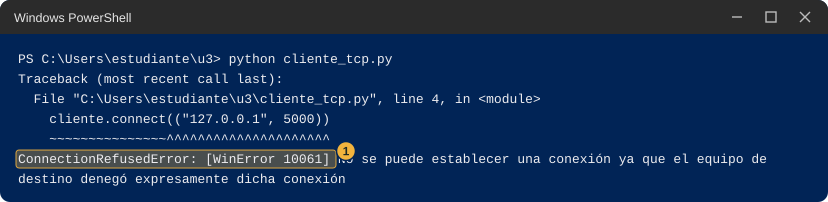
Los programas de UDP
En la consola 1 crea
servidor_udp.pyconnotepad servidor_udp.py, pega este código, guarda y cierra.import socket servidor = socket.socket(socket.AF_INET, socket.SOCK_DGRAM) servidor.bind(("127.0.0.1", 5000)) print("Escuchando en el puerto 5000") datos, origen = servidor.recvfrom(1024) print("Llego", datos, "desde", origen) servidor.sendto(datos, origen) servidor.close()En la consola 1 crea
cliente_udp.pyconnotepad cliente_udp.py, pega este código, guarda y cierra.import socket cliente = socket.socket(socket.AF_INET, socket.SOCK_DGRAM) cliente.settimeout(3) cliente.sendto(b"temperatura=24.5", ("127.0.0.1", 5000)) try: print(cliente.recvfrom(1024)[0]) except socket.timeout: print("Sin respuesta")En la consola 1 escribe
python servidor_udp.pyy pulsa Enter. Debe escribirEscuchando en el puerto 5000y esperar.En la consola 2 escribe
python cliente_udp.pyy pulsa Enter. Debe aparecerb'temperatura=24.5'. En la consola 1 debe aparecerLlego b'temperatura=24.5' desde ...con la dirección y un número, y el prompt vuelve.

- Con la consola 1 sin programa esperando, escribe en la consola 2
python cliente_udp.pyotra vez. Anota qué aparece y cuánto tarda. En Windows y contra tu propio equipo debe aparecer un error que termina conConnectionResetError: [WinError 10054].
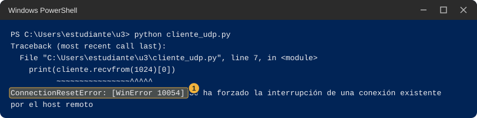
- Abre
cliente_udp.pyconnotepad cliente_udp.pyy cambia127.0.0.1por192.0.2.99. El RFC 5737 reserva ese bloque de direcciones para ejemplos en documentación, así que no debería existir ningún equipo con esa dirección. Guarda y cierra. - En la consola 2 escribe
python cliente_udp.pyy pulsa Enter. Espera sin tocar nada: pasan unos tres segundos y apareceSin respuesta. Anota qué aparece y cuánto tarda. - Vuelve a cambiar en
cliente_udp.pyla dirección192.0.2.99por127.0.0.1y guarda. Así queda lista para la Parte 2.
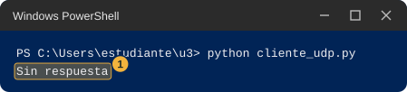
La herramienta de Windows
En la consola 2 pega este comando de una sola línea y pulsa Enter. No imprime nada: define una pequeña herramienta llamada
medir.function medir($ip, $numero) { $t = Get-Date; Test-NetConnection -ComputerName $ip -Port $numero -InformationLevel Quiet; [math]::Round(((Get-Date) - $t).TotalSeconds, 1) }Pieza Qué hace function medir($ip, $numero) { ... }Crea un comando nuevo llamado medir, que recibe una dirección y un número.$t = Get-DateGuarda la hora actual. Test-NetConnection -ComputerName $ip -Port $numeroIntenta llamar a esa dirección y a ese número, como lo haría un programa. -InformationLevel QuietQue imprima solo Truesi lo logró oFalsesi no. La documentación de Microsoft explica queQuietdevuelve la información básica.[math]::Round(((Get-Date) - $t).TotalSeconds, 1)Calcula cuántos segundos pasaron desde la hora guardada, con un decimal. En la consola 1 escribe
python servidor_tcp.pypara que quede esperando. En la consola 2 escribemedir 127.0.0.1 5000y pulsa Enter. Debe aparecerTruey el tiempo en segundos, con coma decimal. La consola 1 escribeConectoy su prompt vuelve.Con la consola 1 sin programa esperando, escribe en la consola 2
medir 127.0.0.1 5000. Debe aparecer una línea en inglés,ADVERTENCIA: TCP connect to (127.0.0.1 : 5000) failed, despuésFalsey el tiempo, que está entre 2 y 3 segundos.Escribe en la consola 2
medir 192.0.2.99 5000y pulsa Enter. Tarda mucho más: espera sin cerrar nada hasta que aparezcaADVERTENCIA: TCP connect to (192.0.2.99 : 5000) failed,Falsey el tiempo. Anota los tres tiempos.
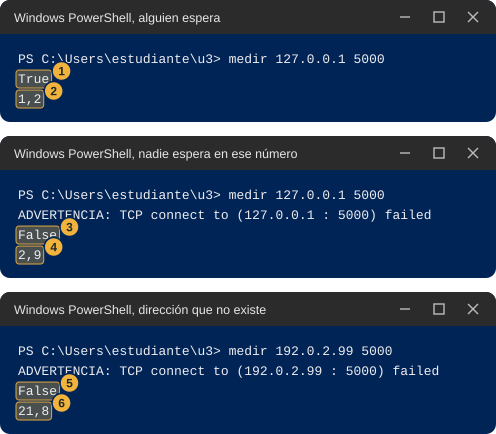
- Opcional. Con la consola 1 sin programa esperando, escribe
Test-NetConnection -ComputerName 127.0.0.1 -Port 5000para ver la salida completa. Tarda unos 9 segundos; espera. Busca la líneaTcpTestSucceeded: diceTruesi logró la llamada yFalsesi no.
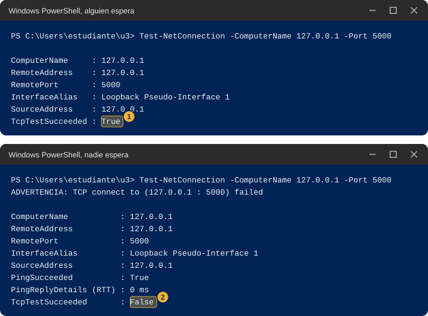
pythondiceSyntaxErroroIndentationError. Al pegar se perdieron los espacios del comienzo de línea. Abre el archivo connotepady pega el bloque completo otra vez.- La consola 1 dice
OSErrory “un uso de cada dirección”. Otro programa usa el 5000. Cambia el número en todos los archivos de esta estación y en el comandomedir. - El cliente dice
ConnectionRefusedErrory creías que el servidor estaba encendido. Los programas de TCP atienden una sola llamada y terminan. Vuelve a encender el servidor antes de cada cliente. medirno se reconoce. Abriste una consola nueva, o la definición no se pegó. Repite el paso 19 en la consola donde lo necesitas.cliente_udp.pyomedirhacia 192.0.2.99 terminan al instante con un error en vez de esperar. Tu red devolvió un aviso de que no hay camino. Anota el mensaje exacto y el tiempo: es un dato y la clase lo usa.- La definición de
medirfalla con “no se puede ejecutar scripts”. No debería pasar con una sola línea pegada en la consola. Si pasa, anota el mensaje exacto y sigue sin esa parte.
Haz. Parte 2, con tu pareja
Esta parte puede fallar por muchas razones ajenas a ti. Sigue los pasos, anota lo que ocurra y pasa a la siguiente estación aunque no haya funcionado. El estudiante A enciende el programa que espera y el B llama.
- Estudiante A. Abre
servidor_tcp.pyconnotepad servidor_tcp.py. En la líneaservidor.bind(("127.0.0.1", 5000))cambia127.0.0.1por0.0.0.0. Guarda y cierra. Esa dirección significa “cualquier entrada de este equipo”, y con ella tu compañero puede llamarte. - Estudiante A. En la consola escribe
python servidor_tcp.pyy pulsa Enter. Si aparece el aviso del firewall, sigue “Qué hace el firewall”: solo redes privadas, y si pide administrador, cancelar y anotar el mensaje. Debe aparecerEscuchando en el puerto 5000. - Estudiante A. Dile a B tu dirección IPv4.
- Estudiante B. Abre
cliente_tcp.pyconnotepad cliente_tcp.pyy cambia127.0.0.1por la dirección IPv4 de A. Guarda y cierra. - Estudiante B. En la consola escribe
python cliente_tcp.pyy pulsa Enter. Si funcionó, apareceb'temperatura=24.5'. Si aparece un error, anótalo completo y mira cuánto tardó. - Estudiante A. Si funcionó, tu consola escribió
Conectocon la dirección de B, no la tuya. - Repitan los pasos 1 a 6 con UDP: A cambia
127.0.0.1por0.0.0.0enservidor_udp.pyy B cambia la dirección encliente_udp.py. Con UDP el cliente espera tres segundos y escribeSin respuestasi no llega nada. - Estudiante A. Vuelve a encender el servidor (con
0.0.0.0todavía puesto) y espera. Cadamedirgasta una llamada: para repetir, A lo enciende otra vez. - Estudiante B. Con el programa de A encendido, escribe
medirseguido de la dirección de A y5000, por ejemplomedir 192.168.10.20 5000. AnotaTrueoFalsey el tiempo. - Estudiante B. Cuando el programa de A ya terminó (el
mediranterior gastó su llamada), repite el mismomedir. Anota si dioFalsey cuánto tardó. Compara con los tiempos de la Parte 1. - Cambien de rol y repitan todo.
No afirmes cuál es la causa real. Los tiempos son pistas, no certezas. Anota el resultado y marca las posibilidades razonables.
ConnectionRefusedErroren pocos segundos. Hubo una respuesta de la otra parte diciendo que nadie espera en ese número. Posibles causas: A no encendió su programa, A dejó el de la Parte 1 con127.0.0.1, o se escribió otro número.TimeoutError: [WinError 10060]después de más de veinte segundos. Nadie contestó. Posibles causas: el firewall de A descartó la llamada, están en redes distintas, la dirección está mal copiada, o el equipo de A está apagado o desconectado.Sin respuestaen UDP. No distingue entre un mensaje que no llegó, uno que llegó y nadie atendió, o una respuesta que se perdió.- Windows pidió credenciales de administrador a A y se canceló. Es posible que el programa de A no pueda recibir llamadas de otros equipos.
medirdaFalseen entre 2 y 3 segundos cuando el programa de A ya terminó, yFalseen más de veinte segundos cuando el programa de A está encendido. Compara las dos situaciones: si la primera es corta y la segunda es larga, el equipo de A respondió “nadie espera” cuando no había programa y no respondió nada cuando lo había. Es una observación, no una explicación.
Anota y observa
Llena todas las filas. Después responde.
- ¿Cuánto tardó en aparecer el error de TCP cuando nadie esperaba? ¿Y cuánto cuando la dirección no existía?
- ¿Qué hizo UDP en las mismas dos situaciones? ¿Fue igual a TCP?
- ¿Es lo mismo que nadie espere en un número que nadie conteste? Escribe en una frase por qué crees que sí o que no.
Con alguien esperando, la llamada funcionó y el programa que llama recibió lo mismo que mandó. Cuando nadie esperaba en tu propio equipo, TCP falló con un rechazo claro (ConnectionRefusedError) en unos dos segundos. Cuando la dirección no existía, TCP no recibió nada de nadie y falló mucho después, con TimeoutError, tras algo más de veinte segundos. UDP, con la dirección de tu propio equipo y nadie esperando, también terminó con un error, el 10054, pero no porque UDP avise: la documentación de Microsoft sobre la función recvfrom explica que, en UDP, ese error indica que un envío anterior provocó un aviso del otro lado diciendo que nadie atendía en ese número. Lo envía el sistema del otro lado, no el programa. Cuando la dirección no existía, UDP no recibió ningún aviso y el programa solo esperó sus tres segundos y escribió Sin respuesta. Entonces “cerrado” y “sin respuesta” se ven distintos por el tiempo que tardan en dar el mismo False. En clase se estudia qué los produce.
Esta estación abre el tema de los sockets, los puertos, TCP y UDP, el firewall y el aviso de ICMP. Las preguntas que quedan son qué es lo que ocurre dentro del programa en cada línea de servidor_tcp.py, y por qué un puerto cerrado responde en dos segundos mientras que un equipo que no contesta tarda veinte.
8 Estación 7. Mi plan (opcional)
Con lo que descubriste en las estaciones 3 y 4, diseña cómo repartir las 256 direcciones del laboratorio entre los cuatro grupos. Un programa te dice si tu plan “cabe” o “no cabe”, pero no te da la respuesta.
Predice
En papel, antes de tocar el computador, escribe tu primer plan: para cada grupo, cuántas direcciones le vas a dar, en qué dirección empieza y en qué dirección termina. Los bloques no pueden pisarse entre sí.
| Qué miro | Mi predicción | Parte 1 (mi equipo) | Parte 2 (con mi pareja) | Qué me llamó la atención |
|---|---|---|---|---|
| Mi primer plan, grupo por grupo | ||||
| Qué grupos dijo el verificador que no cabían | ||||
| Mi plan final, con la dirección donde empieza cada bloque | ||||
| Direcciones del laboratorio sin usar en mi plan final | ||||
| Lugares de equipo que sobran dentro de mis bloques |
Haz. Parte 1, en tu equipo
Abre PowerShell y escribe
cd ~\u3. Pulsa Enter.Escribe
notepad verificador.pyy pulsa Enter. Pega este código y guarda.import ipaddress LABORATORIO = ipaddress.ip_network("192.168.10.0/24") NECESITA = {"sensores": 60, "administracion": 25, "servidores": 10, "enlace": 2} # Escribe cada bloque entre comillas, con la forma "192.168.10.128/25". # Deja "" en el grupo que todavia no hayas resuelto. mi_plan = { "sensores": "", "administracion": "", "servidores": "", "enlace": "", } bloques = {} todo_bien = True for grupo, equipos in NECESITA.items(): texto = mi_plan[grupo].strip() if texto == "": print(grupo, "-> sin llenar") todo_bien = False continue try: bloque = ipaddress.ip_network(texto) except ValueError: print(grupo, "-> no cabe: esta mal escrito o no puede empezar un bloque de ese tamano en esa direccion") todo_bien = False continue if bloque.prefixlen > 30: print(grupo, "-> no cabe: esta herramienta solo acepta bloques de 4 direcciones o mas") todo_bien = False continue if not bloque.subnet_of(LABORATORIO): print(grupo, "-> no cabe: queda fuera de 192.168.10.0/24") todo_bien = False elif len(list(bloque.hosts())) < equipos: print(grupo, "-> no cabe: tiene lugar para", len(list(bloque.hosts())), "equipos y necesita", equipos) todo_bien = False else: choques = [otro for otro, b in bloques.items() if b.overlaps(bloque)] if choques: print(grupo, "-> no cabe: se pisa con", choques[0]) todo_bien = False else: print(grupo, "-> cabe") bloques[grupo] = bloque usadas = sum(b.num_addresses for b in bloques.values()) sobran = sum(len(list(b.hosts())) - NECESITA[g] for g, b in bloques.items()) print("Direcciones del laboratorio sin usar:", LABORATORIO.num_addresses - usadas) print("Lugares de equipo que sobran dentro de tus bloques:", sobran) print("Plan completo:", "cabe" if todo_bien else "todavia no cabe")Lo que escribe el programa, línea por línea.
Línea del resultado Qué significa grupo -> cabeEl bloque que escribiste para ese grupo está bien escrito, queda dentro del laboratorio, tiene lugar para todos sus equipos y no se pisa con otro. grupo -> no cabe: ...Algo de lo anterior falla, y el mensaje dice cuál. No dice qué escribir en cambio. grupo -> sin llenarTodavía dejaste vacío el grupo. Direcciones del laboratorio sin usarCuántas de las 256 no quedaron en ningún bloque. Lugares de equipo que sobran dentro de tus bloquesCuántos equipos más caben en tus bloques de los que se necesitan. Plan completoDice cabesolo si los cuatro grupos cabrían a la vez.Sin cambiar nada, escribe
python verificador.py. Los cuatro grupos deben decirsin llenar, las direcciones sin usar deben ser 256 y debe terminar enPlan completo: todavia no cabe.Abre el archivo con
notepad verificador.pyy busca el bloquemi_plan. Escribe entre las comillas de cada grupo el bloque de tu plan de papel, con la forma de la dirección donde empieza, una barra y el número que ya usaste en la estación 4. Un ejemplo de la forma, que no es respuesta de ningún grupo, es"192.168.10.128/25". Guarda.Escribe
python verificador.pyy lee el resultado. Corrige solo las líneas que dicenno cabe, guarda y vuelve a ejecutar. Repite hasta quePlan completodigacabe.Cuando tu plan quepa, prueba otro: pon los cuatro grupos en bloques iguales de 64 direcciones, uno tras otro. Mira cuántos lugares sobran, y compara con el de tu plan.
Anota tu plan final y los dos números de la tabla.
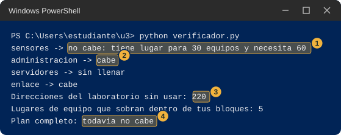
- Elige primero cuántas direcciones necesita cada grupo, usando la tabla que llenaste en la estación 4.
- Coloca primero el grupo más grande y deja los más pequeños para después.
- Cuando el verificador dice que un bloque está mal escrito aunque lo hayas copiado bien, mira dónde termina el bloque anterior y cuenta cuántas direcciones ocupa. Un bloque de 32 direcciones solo puede empezar en .0, .32, .64, .96 y así sucesivamente, y uno de 16 solo en .0, .16, .32 y así sucesivamente.
- Python dice
KeyErroroSyntaxError. Cambiaste el nombre de un grupo o borraste una comilla o una coma al editarmi_plan. Revisa que cada línea tenga la forma"sensores": "192.168.10.0/26",. - Dice
no cabe: esta mal escritoen un bloque que crees bien. Mira la tercera pista. - Dice
can't open file. Estás en otra carpeta: escribecd ~\u3.
Haz. Parte 2, con tu pareja
Esta parte no usa la red, así que siempre se puede completar.
- Intercambien sus planes finales escritos en papel.
- Cada uno escribe el plan del otro en su
verificador.py, lo ejecuta y anota si cabe. - Comparen: si los dos planes caben y son distintos, ¿puede haber más de una repartición correcta? ¿Cuál tiene menos lugares sobrantes?
Anota y observa
- ¿Qué grupo fue el más difícil de colocar? ¿Por qué?
- ¿Qué cambió entre el plan de papel y el plan final?
- ¿Cuántas direcciones quedan sin usar en el plan con tamaños distintos, y cuántas en el de bloques iguales?
Una repartición que cabe es 192.168.10.0/26 para los sensores, 192.168.10.64/27 para administración, 192.168.10.96/28 para los servidores y 192.168.10.112/30 para el enlace. Con él, el verificador dice que sobran 140 direcciones del laboratorio y 11 lugares de equipo. No es la única que cabe: los mismos tamaños se pueden colocar en otro orden, mientras cada bloque empiece donde puede empezar y ninguno se pise con otro. Con cuatro bloques iguales de 64 el verificador también dice que cabe, pero sobran 151 lugares y no queda ninguna dirección libre.
Esta estación abre el tema del plan de direccionamiento con VLSM. La pregunta que queda es cómo se escribe ese plan para que otras personas puedan usarlo: qué dirección usa la puerta de enlace de cada grupo, cuál es su rango y cuál su dirección de difusión.
9 Si algo no te sale
Esta tabla reúne los problemas que más se repiten en toda la guía. Cada estación tiene su propia lista de causas posibles para la Parte 2.
| Qué ves | Qué probar |
|---|---|
python no se reconoce o se abre la tienda de Microsoft |
Prueba py --version. Si funciona, usa py en lugar de python. Si no, avisa al docente. |
can't open file ... No such file or directory |
Estás en otra carpeta o el archivo se llama distinto. Escribe cd ~\u3 y revisa con dir. |
El archivo termina en .py.txt |
Cámbiale el nombre con Rename-Item archivo.py.txt archivo.py. |
SyntaxError o IndentationError |
Al pegar se perdieron los espacios del comienzo de línea. Borra el contenido del archivo y pega el bloque completo. |
OSError ... un uso de cada dirección |
Otro programa usa ese número. Cambia el número en todos los archivos y comandos de la estación. |
| Un programa no devuelve el prompt | Está esperando. Haz clic en su ventana y pulsa Ctrl+C. |
medir no se reconoce |
La consola es nueva. Pega otra vez la definición del paso 19 de la estación 6. |
| La Parte 2 no funciona | Anota el resultado y el mensaje exacto, marca las causas posibles, y sigue con la estación siguiente. La Parte 1 basta para completar la estación. |
10 Qué cifras no reproduce esta guía
Esta guía no afirma nada que no haya podido comprobarse. Lo siguiente queda fuera, o se dice con reserva.
- Los pasos de la Parte 2 de cada estación necesitan dos equipos y se probaron solo en un equipo, con la dirección 127.0.0.1. Los resultados dibujados de la Parte 2 son ejemplos, no capturas.
- No se probó el aviso del firewall: no se pudo observar la ventana que muestra Windows, así que la guía lo describe sin copiar su texto. Tampoco se probó qué clase de red (privada o pública) le asigna Windows a la red por cable de tu sala.
- No se probó el texto exacto que muestra el Bloc de notas al crear un archivo nuevo, ni el de la página de error del navegador cuando no logra conectar.
- Los tiempos (unos 2 segundos para un rechazo, unos 22 segundos sin respuesta, unos 3 segundos de espera de UDP) se midieron en un solo equipo. En el tuyo cambian, aunque el orden de magnitud se parece.
- El número 5000 figura en el registro de IANA a nombre de un servicio llamado
commplex-main, y no se verificó en IANA el 8000. La guía los usa porque en un equipo corriente casi nadie los ocupa, no porque estén garantizados libres. Si en tu equipo están ocupados, la guía explica qué hacer. - La opción
-4deroute printfunciona en Windows 11, pero la página de Microsoft sobrerouteno la lista. - Las direcciones de los saltos de
tracertmás allá de tu sala son ejemplos de rangos reservados para documentación, no recorridos reales. - La regla de que en cada bloque caben dos equipos menos que direcciones tiene el bloque es una observación que hace la herramienta de Python, y la guía no la explica: se explica en clase.
11 Recursos
- Microsoft. Referencia de comandos de Windows Server: ping, tracert y route. Microsoft Learn.
- Microsoft. “Test-NetConnection”, módulo NetTCPIP. Microsoft Learn. learn.microsoft.com, test-netconnection
- Microsoft. “Windows Firewall Overview”. Microsoft Learn. learn.microsoft.com, windows-firewall
- Microsoft. “Windows Sockets Error Codes”. Microsoft Learn, códigos WSAECONNREFUSED y WSAETIMEDOUT. learn.microsoft.com, windows-sockets-error-codes-2
- Microsoft. “recvfrom function (winsock.h)”. Microsoft Learn, descripción del código WSAECONNRESET en sockets UDP. learn.microsoft.com, nf-winsock-recvfrom
- Microsoft. “Starting Windows PowerShell”. Microsoft Learn. learn.microsoft.com, starting-windows-powershell
- Python Software Foundation. “http.server, HTTP servers”, incluye la interfaz de línea de comandos y la advertencia de seguridad. docs.python.org, http.server
- Python Software Foundation. “ipaddress, IPv4/IPv6 manipulation library”. docs.python.org, ipaddress
- Python Software Foundation. “socket, Low-level networking interface”. docs.python.org, socket
- Python Software Foundation. “Format Specification Mini-Language”. docs.python.org, string.html#formatspec
- Python Software Foundation. “Using Python on Windows”, sobre el lanzador
py. docs.python.org, using/windows - Internet Engineering Task Force (IETF). RFC 1122, “Requirements for Internet Hosts, Communication Layers”. Octubre de 1989, sección 3.2.1.3 sobre la red 127. rfc-editor.org, rfc1122
- Internet Engineering Task Force (IETF). RFC 4291, “IP Version 6 Addressing Architecture”. Febrero de 2006, sección 2.5.5.2 sobre direcciones IPv4 mapeadas. rfc-editor.org, rfc4291
- Internet Engineering Task Force (IETF). RFC 5737, “IPv4 Address Blocks Reserved for Documentation”. Enero de 2010. rfc-editor.org, rfc5737
- Internet Engineering Task Force (IETF). RFC 9110, “HTTP Semantics”. Junio de 2022, secciones 9.3.1, 15.3.1 y 15.5.5. rfc-editor.org, rfc9110
- Internet Assigned Numbers Authority (IANA). Service Name and Transport Protocol Port Number Registry. iana.org, service-names-port-numbers
Telemática para IoT (TPI01). Fundación Universitaria María Cano. Facultad de Ingeniería. Semestre 2026-02.
Transparencia. La redacción de esta guía contó con el apoyo de inteligencia artificial, con el modelo Claude de Anthropic. El código y los comandos de la Parte 1 se ejecutaron en un equipo con Windows 11 y Python 3.13, y los datos se contrastaron con documentación primaria de Microsoft, Python, la IETF y la IANA. Los pasos de la Parte 2 con pareja no se probaron con dos equipos, y las imágenes de esa parte son dibujos de ejemplo, no capturas.